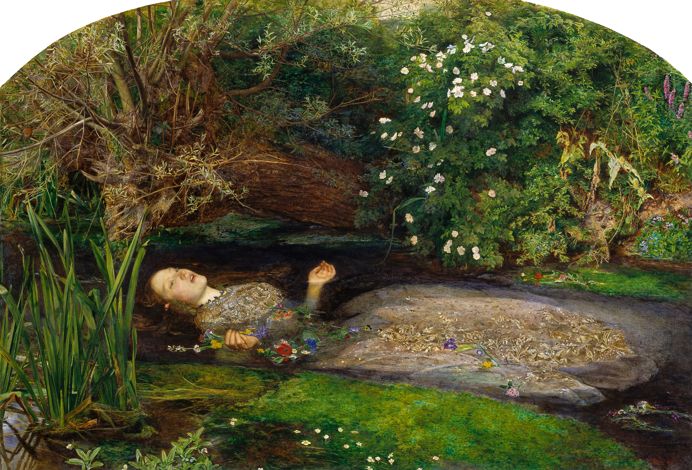

Painting by John Everett Millais (1851–1852)
Ophelia is a celebrated oil painting by British Pre-Raphaelite master John Everett Millais. Depicting Shakespeare’s heroine from Hamlet singing while floating in a stream shortly before her death, the work is renowned for its haunting emotional stillness and incredible botanical precision.
The composition captures Ophelia in a state of suspended agony and ecstasy, surrounded by elaborate floral symbolism representing innocence, pain, and death. Completed between 1851 and 1852, the oil-on-canvas masterpiece (76.2 × 111.8 cm) is housed in the permanent collection at Tate Britain in London.
Hover over the artwork to inspect Millais's painstaking floral and textural details through the magnifying loupe.

Proportional breakdown of the primary color palette across the canvas:
Millais spent five consecutive months in 1851 painting the background outdoors along the banks of the Hogsmill River in Surrey. He worked for up to eleven hours a day in harsh elements to paint the river flora with uncompromising scientific detail.
Back in London, 19-year-old model Elizabeth Siddal posed in a heated bathtub filled with water to depict Ophelia's floating body. When the lamps warming the water extinguished unnoticed, Siddal suffered severe hypothermia.
When first unveiled at the Royal Academy exhibition of 1852, critical reaction was divided. Early Victorian commentators were unsettled by the juxtaposition of beauty and mortality, with some describing the flora as excessively manicured.
However, over time, Ophelia became recognized as a monumental masterpiece of Pre-Raphaelite art. Today, it stands as one of the most recognizable and adored paintings in Tate Britain, influencing generations of poets, filmmakers, and musicians.
Millais’s haunting composition continues to resonate across contemporary art forms. American atmospheric post-black metal band Ghost Bath chose Millais’s Ophelia as the cover artwork for their critically acclaimed 2014 full-length album, Funeral.
The tragic isolation and melancholic beauty of the painting mirror the album's introspective soundscapes.